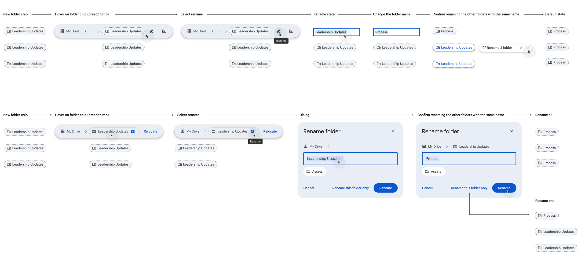

Design Lead
1 Designer
2 Researchers
1 Visual Designer
- 84% Overall Positive Impression
- 93% Delight
- 97% Usability Rating
- 81% Value
- Defined and led the 0→1 vision for an intelligent file organizing agent in Drive.
- Explored and prototyped multiple interaction models, partnering with Research to validate trust and usability — achieving 100% task completion in testing.
- Secured leadership alignment on the AI interaction direction and execution strategy.
- Launched to Alpha with 97% usability, validating strong early product-market fit.
Context
In 2025/2026, Google Drive set out to evolve from a passive file storage system into a true thinking partner — an intelligent agent that proactively helps users find, analyze, and organize their content.
With Gemini integration, organizing became a strategic initiative. Rather than relying on users to manually maintain structure, Drive now actively helps keep content organized, making it easier to find, access, and collaborate on files.
Organizing is foundational behavior in Drive:
- 88% of users organize weekly
- It is the 3rd most requested area of improvement among commercial users
- Yet the experience was entirely manual and cognitively heavy
Users wanted to be organized — but the friction of sorting, renaming, and structuring files made it overwhelming.
This presented a clear opportunity:
Reduce manual effort and build confidence through AI-driven assistance.
To validate our market fit, we focused on a small, high-impact scope. We identified that the most significant friction occurred at the "root" level.
- 51% of all organizational actions involve moving a file from the root to an existing folder
- 65% of parent-to-child moves are into folders created at the exact moment of organization
Design AI-driven suggestions focused on the most common, confidence-building actions:
- Move files into existing folders
- Create new folders (one level deep) and move files automatically
To increase velocity and focus on validating the AI interaction model, we reused existing Drive UI components.
Competitive Analysis
Our competitors have taken different approaches to automating manual organizing tasks.

Box
Using GenAI for metadata extraction to automate workflows & improve search. Focused on Enterprise.

Dropbox
Provide basic folder automations, limited GenAI organization automations for folders.

Claude
Long game. Bet on computer use being used to automate repetitive organizing tasks.
User Journey Mapping
I led a journey mapping exercise to align the team around the core phases of the Gemini organizing experience. Since our initial launch focused on organizing a folder and My Drive, we concentrated on those primary journeys.
This exercise was critical in shaping the foundation of the experience:
- User Flow — Mapping the end-to-end path to ensure users could successfully complete an organizing request without friction.
- User Needs — Identifying the information required for users to feel confident in an AI suggestion (e.g., destination, reason for move, level of impact).
- User Intent — Clarifying and personalizing organizing goals to ensure suggestions aligned with what users were trying to accomplish.
Constraint — Due to timeline limitations, we narrowed scope to root-level and single-folder organizing, intentionally deferring deeper restructuring capabilities to future milestones.

Design Process
A critical part of the process was determining where to surface Gemini's suggestions. I explored four directions, weighing user context against technical and organizational constraints.
- Above the file list: High visibility but too intrusive
- Dialog: Provided focus but felt cramped
- Workspace Gemini side panel: Ideal but blocked by external team ownership
- Dedicated view: Selected — full canvas, rapid iteration, scaling potential
We ultimately chose a dedicated view. It offered a "full canvas" for the best user experience and allowed us to move quickly without external blockers. This path was the most scalable way to validate the feature's core value.

I explored several ways to visualize how files would move into existing and newly created folders, making sure users clearly understood both the original location and the suggested destination.
Drove alignment through iterative design critiques and weekly leadership reviews, resulting in the selection of Option 1 for its clarity and reuse of existing Drive components. Although Option 2 more explicitly visualized the folder structure, it would have required significant engineering effort that didn't meet our timelines.

We focused heavily on the renaming experience for newly created folders. When the system generated a folder name, users could edit it before confirming — with the option to apply the updated name across all matching suggestions — preserving control and consistency without adding friction.

I iterated on the designs and mapped the end-to-end journey for usability testing, focusing on the entry point, page comprehension, refining suggestions, renaming new folders, accepting moves into new and existing folders, and dismissing recommendations.

Findings
Through multiple design iterations and end-to-end usability studies, we validated that users could successfully complete organizing tasks with AI assistance — without confusion or loss of control.
- Participants clearly recognized Gemini as the source of suggestions
- Users understood that files were moving into existing or newly created folders
- Renaming suggested folders felt intuitive and natural
- Task completion rates were high, and users expressed strong confidence in the recommendations
- It was critical to reinforce that users must explicitly accept suggestions — participants were initially concerned moves would happen automatically
- Clearly communicating where files are moving is essential for trust
- Many users were unfamiliar with multi-select behaviors in Drive, leading us to introduce checkboxes for clarity and control
- Providing context for why a file was suggested for a move increases confidence and acceptance
These learnings reinforced that successful AI organizing isn't just about accurate suggestions — it's about designing transparency, agency, and trust into every step of the interaction.
Final Designs
I added a tooltip to the entry point to reinforce that users can review suggestions before accepting them, increasing clarity and control. I also introduced a Workspace Gemini–branded loading state with visible "system thinking" feedback to manage expectations and reduce perceived latency, as generation could take up to 40 seconds.

Because we proactively suggest creating new folders, we wanted to ensure users retained control over the outcome. To support this, we introduced the ability to rename suggested folders — including bulk renaming — before confirming the organizing action.

Users can review and accept organizing suggestions individually or choose to bulk accept all recommendations at once, giving them flexibility and control over how changes are applied.

Launch Metrics
The early launch results have been overwhelmingly positive, proving that users are ready for AI-assisted file organizing.
- 84% Overall Positive Impression
- 93% Delight
- 97% Usability Rating
- 81% Value
What I learned
Designing AI-powered features is less about generating suggestions and more about designing for trust. Users needed to clearly understand what the system was doing, why it made a recommendation, and that they remained in control of the outcome.
This project reinforced that successful AI experiences rely on transparency and confidence. Even when the underlying intelligence is strong, users won't adopt the feature unless the interaction model makes the system's behavior predictable and understandable.